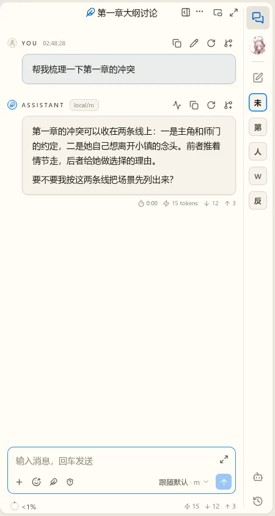
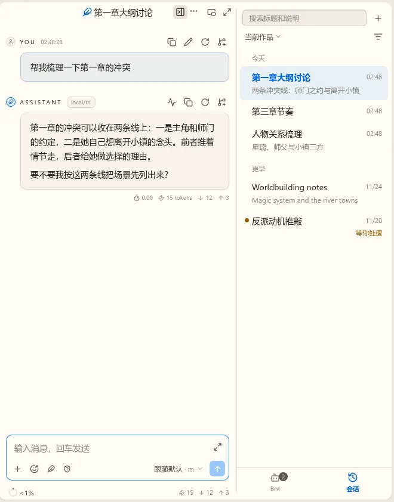
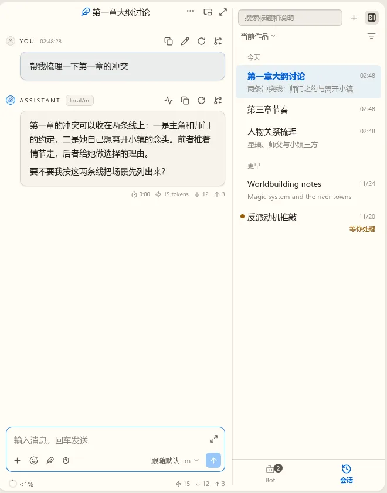
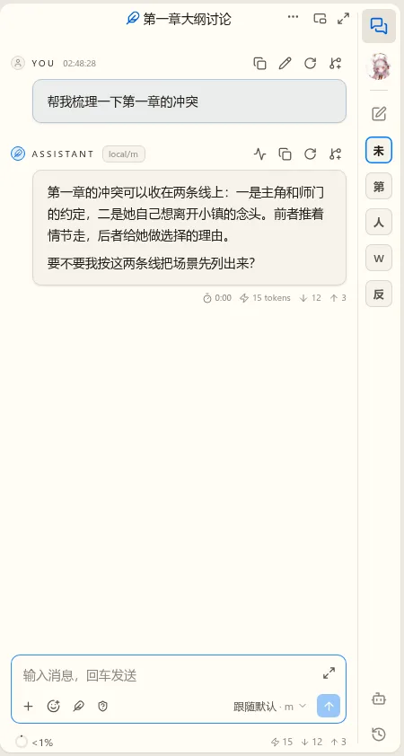
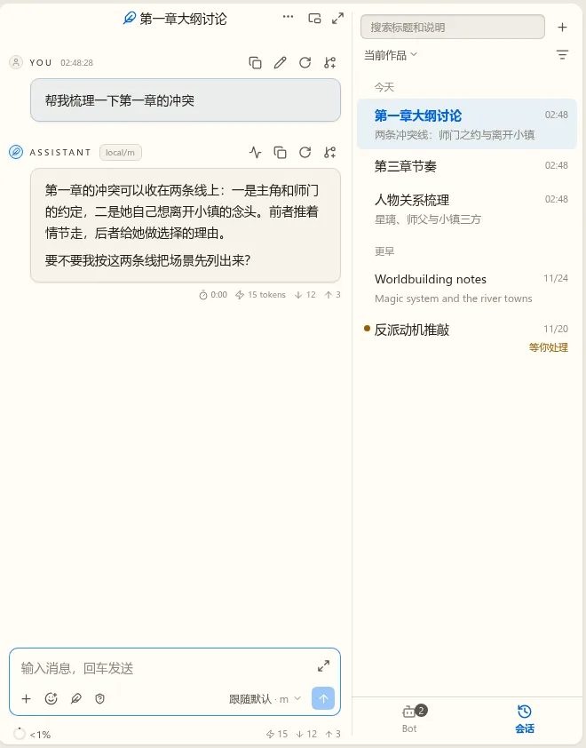
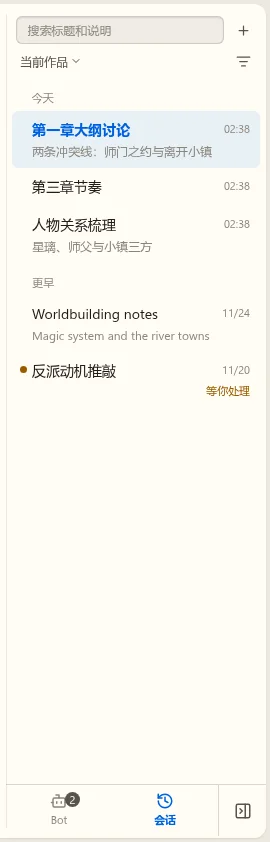
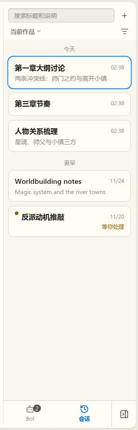
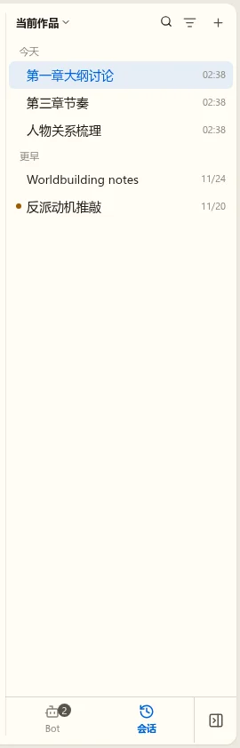
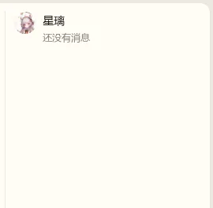

t20 第 4 轮：展开收起按钮与列表
展开收起按钮放在哪？
推荐 A 聊天头右端：收着、展开都在同一个地方，停靠与浮动一样；列表就在它右边长出来，按钮指着它。
A 聊天头右端
收着

展开

B 窄列顶上、列表搜索行右端
收着
展开

两个状态里按钮位置不同。
C 不设按钮
收着

展开

点窄列的 Bot、会话展开到那一页，再点导航条上当前那一页收起；按钮最少，但收起要靠悬停提示才知道。
列表用哪种样子？
推荐一：靠字重与留白分层，200 到 420 宽都稳，一屏七到十条；会话不再用首字方块（首字重复多、认不出），按今天、更早分组，当前项浅底加强调色标题。
一：排印提纲

Bot 页
二：轻卡片

Bot 页
说明可写两行，一屏四到六条，矮的浮动窗里显得满。
三：工具索引

Bot 页

单行最密，一屏十二条以上；说明不显示，搜索要先点放大镜。
直接修，不用答
| 哪里 | 改成什么 |
|---|---|
| 会话页的搜索框 | 占满这一行（现在只有一截，提示文字被截断） |
| “当前作品 / 全部作品” | 放在搜索框下面那一行的左端，筛选在右端（不藏进筛选菜单） |
| 会话没有说明时 | 行只有一行高，不留空的第二行 |
| 未读数 | 中性深色小胶囊，不用强调色（强调色只给当前项）；有等你处理时用 warning 色 |
| 搜索框的提示文字 | 只写“搜索” |
已定
- 浮动窗展开着拖动不再变小；一列按钮对齐到同一条中线；轨宽手柄亮起时是细线（已修并合入）
- 归位后再浮动用上次的位置与大小（已做并合入）
- 列表整个重做（第 1 轮附言“不好看，这个消息列表可以重新做”）
- 收着时窄列（侧柜）保留；展开时底下三个按钮落到列表底部成横排导航（第 2 轮附言）
- 结构按第 3 轮：收着窄列照旧，展开后窄列让位、列表底部是 Bot｜会话；展开收起按钮换个位置（第 3 轮附言，本轮第一题）
- 右栏有别的容器时，展开的列表顶上一行入口；只有消息时不加（第 3 轮）